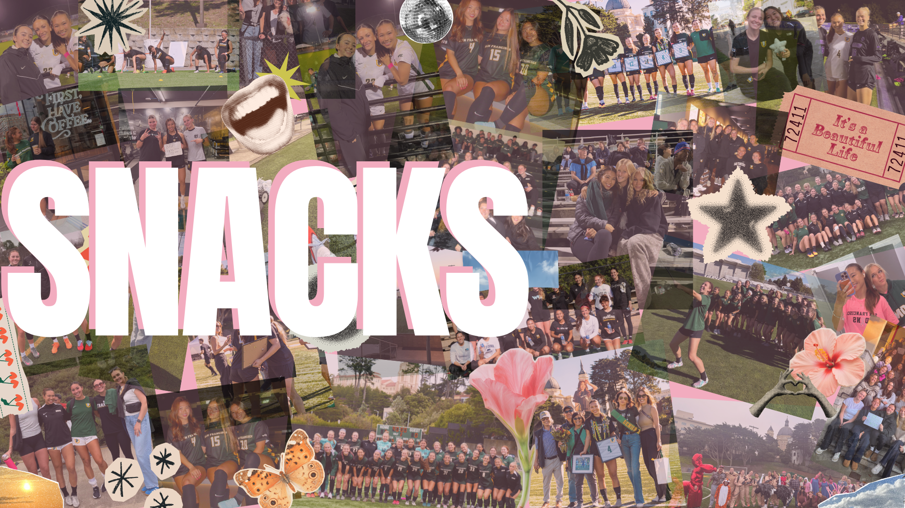
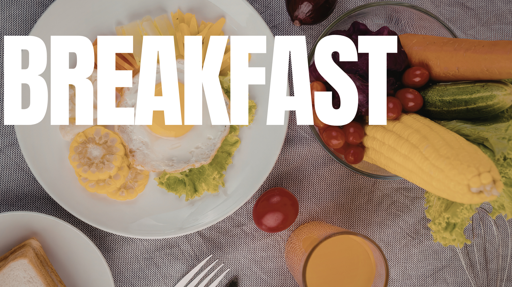
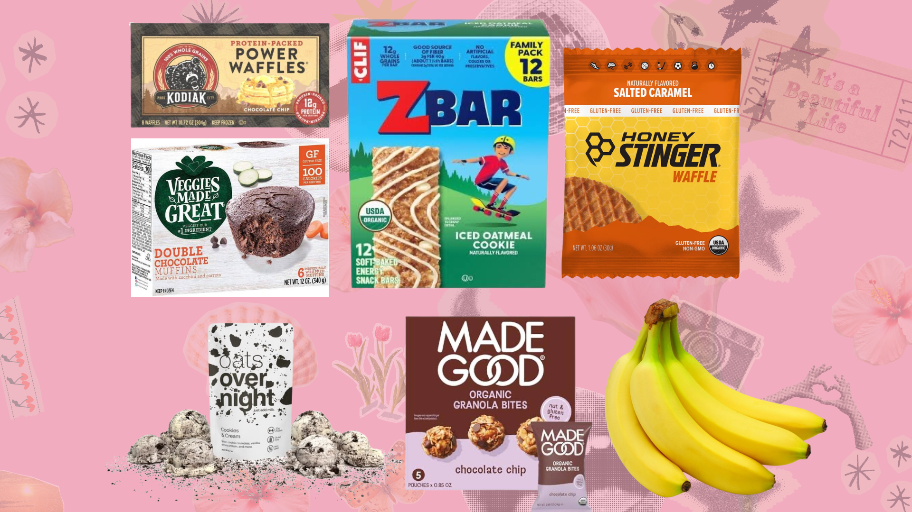
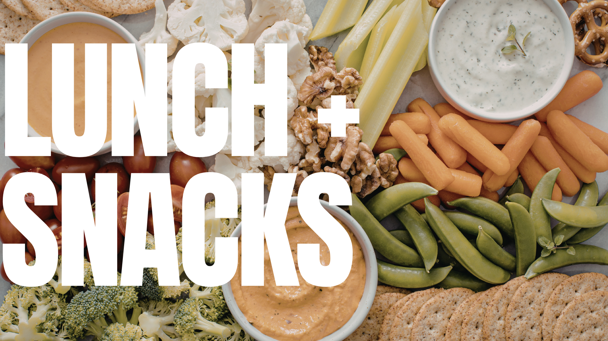
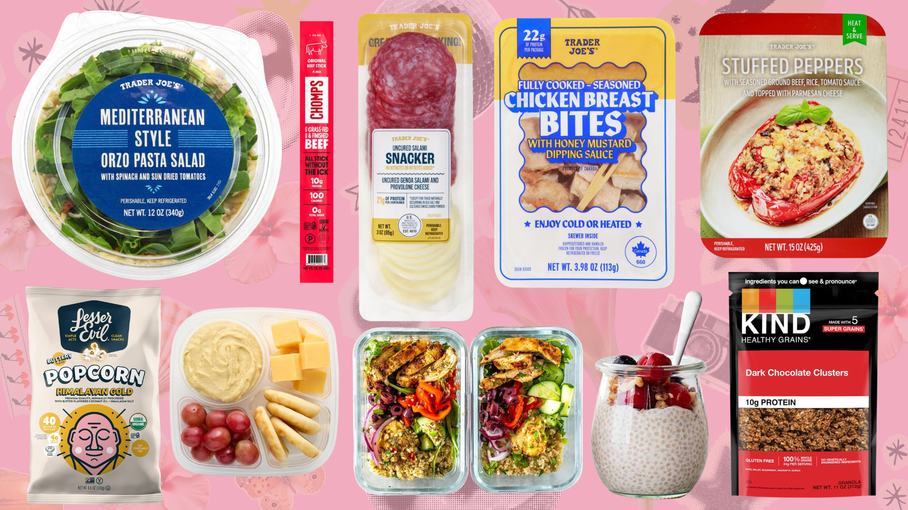
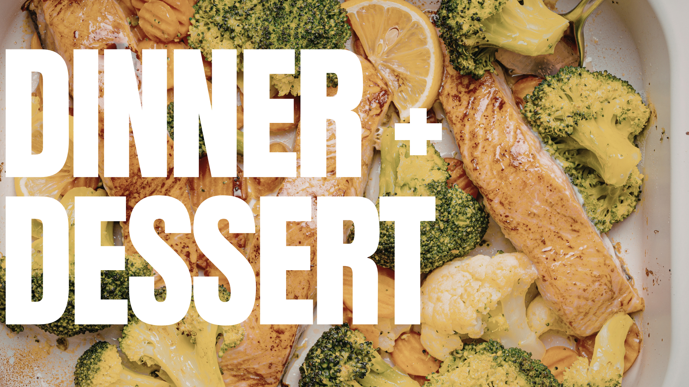
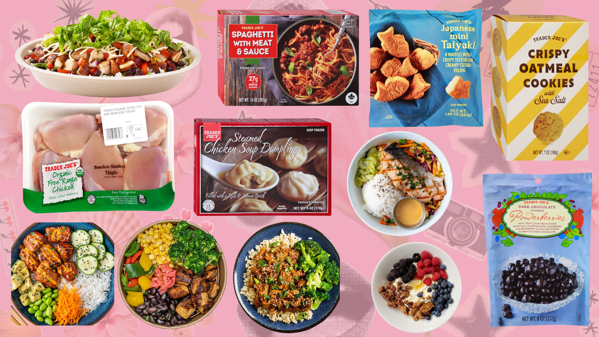

Many of us start our day with a breakfast snack to fuel our morning workouts. This can include smoothies, oatmeal, peanut butter fruit, or breakfast bars. A good breakfast snack provides energy and nutrients to kickstart our day and support our training sessions.


Midday fuel! A balanced lunch snack helps maintain focus and strength for afternoon workouts. Many lunch snacks include a mix of protein, carbs, and healthy fats. Some of our favorites are sandwiches, salads, pasta, and rice bowls with lean proteins and veggies.


Recovery dinner snacks provide protein and nutrients to repair muscles after a long day of training. Some of our go-to dinner snacks include grilled chicken, salmon, quinoa bowls, and roasted veggies. We also like to treat ourselves with a little dessert after a hard day of training. Some favorites are frozen yogurt, cookies, and granola!